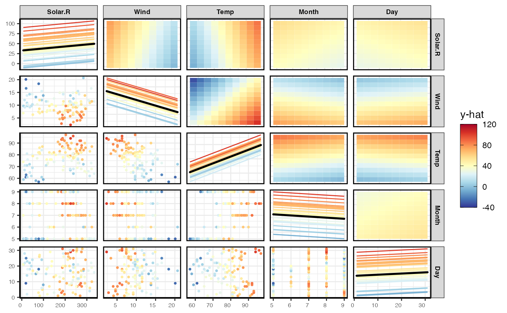
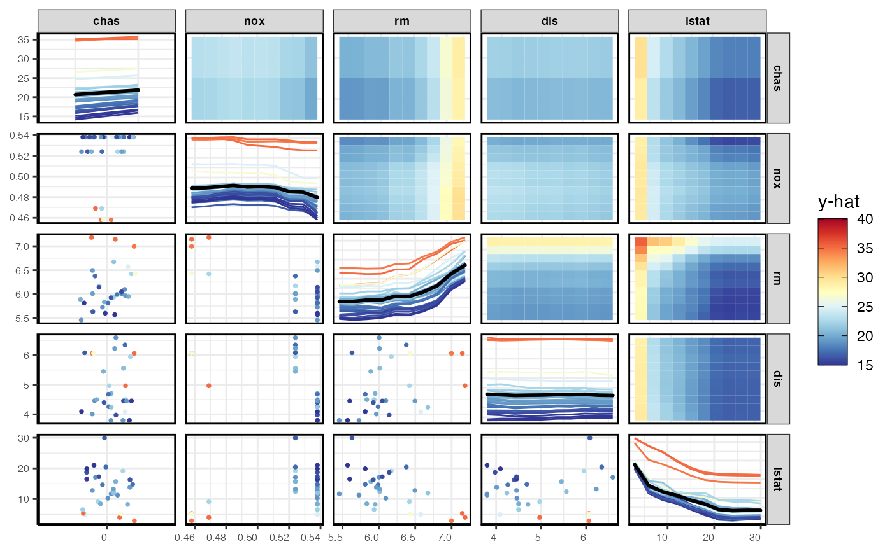
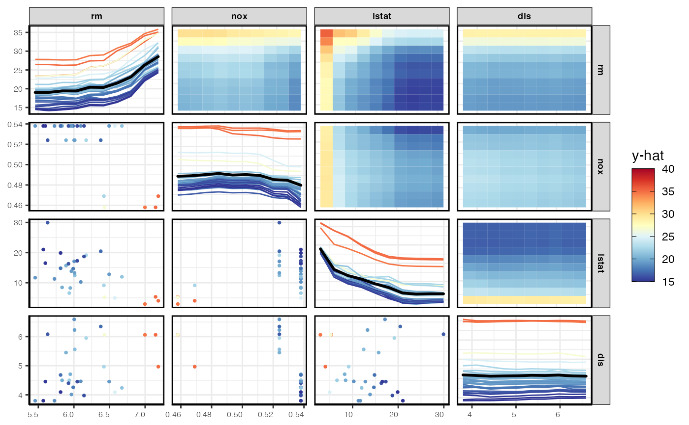
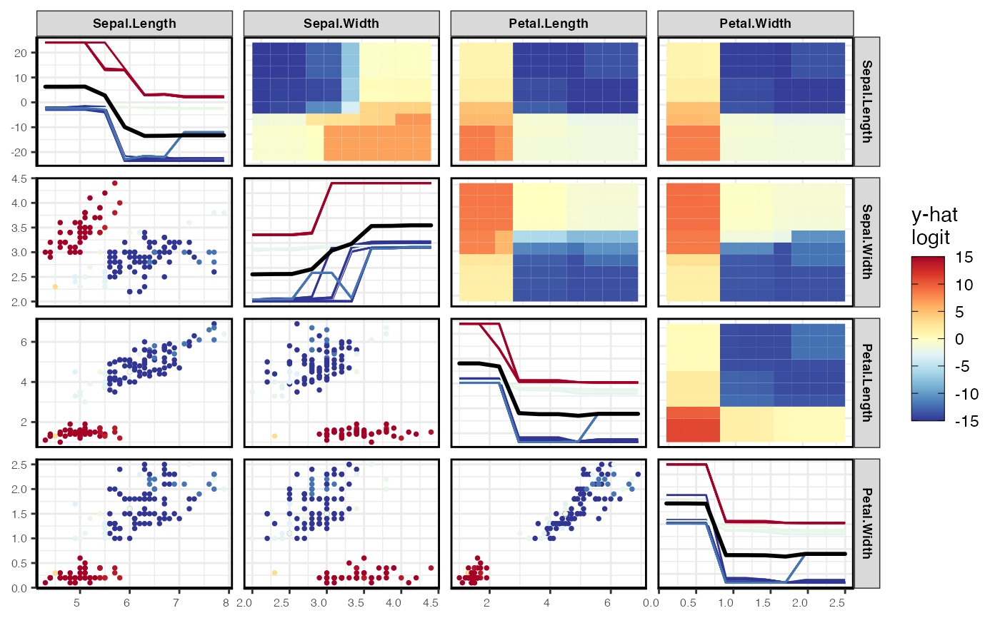
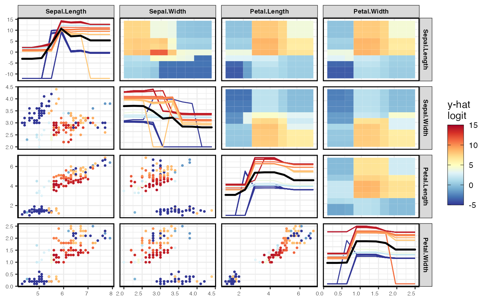

pdpPairs
pdpPairs.RdCreates a pairs plot showing bivariate pdp on upper diagonal, ice/univariate pdp on the diagonal and data on the lower diagonal
pdpPairs( data, fit, response, vars = NULL, pal = rev(RColorBrewer::brewer.pal(11, "RdYlBu")), fitlims = "pdp", gridSize = 10, nmax = 500, class = 1, nIce = 30, colorVar = NULL, comboImage = FALSE, predictFun = NULL, convexHull = FALSE, probability = FALSE )
Arguments
| data | Data frame used for fit. |
|---|---|
| fit | A supervised machine learning model, which understands condvis2::CVpredict |
| response | The name of the response for the fit. |
| vars | The variables to plot (and their order), defaults to all variables other than response. |
| pal | A vector of colors to show predictions, for use with scale_fill_gradientn |
| fitlims | Specifies the fit range for the color map. Options are a numeric vector of length 2, "pdp" (default), in which cases limits are calculated from the pdp, or "all", when limits are calculated from the observations and pdp. Predictions outside fitlims are squished on the color scale. |
| gridSize | The size of the grid for evaluating the predictions. |
| nmax | Uses sample of nmax data rows for the pdp. Default is 500. Use all rows if NULL. |
| class | Category for classification, a factor level, or a number indicating which factor level. |
| nIce | Number of ice curves to be plotted, defaults to 30. |
| colorVar | Which variable to colour the predictions by. |
| comboImage | If TRUE draws pdp for mixed variable plots as an image, otherwise an interaction plot. |
| predictFun | Function of (fit, data) to extract numeric predictions from fit. Uses condvis2::CVpredict by default, which works for many fit classes. |
| convexHull | If TRUE, then the convex hull is computed and any points outside the convex hull are removed. |
| probability | if TRUE, then returns the partial dependence for classification on the probability scale. If FALSE (default), then the partial dependence is returned on a near logit scale. |
Value
A pairs plot
Examples
# Load in the data: aq <- na.omit(airquality) f <- lm(Ozone ~ ., data = aq) pdpPairs(aq, f, "Ozone") #> Generating ice/pdp fits... waiting... #> Finished ice/pdp  # \donttest{ # Run a ranger model: library(ranger) library(MASS) Boston1 <- Boston[, c(4:6, 8, 13:14)] Boston1$chas <- factor(Boston1$chas) fit <- ranger(medv ~ ., data = Boston1, importance = "permutation") pdpPairs(Boston1[1:30, ], fit, "medv") #> Generating ice/pdp fits... waiting... #> Finished ice/pdppdpPairs(Boston1[1:30, ], fit, "medv", comboImage = TRUE) #> Generating ice/pdp fits... waiting... #> Finished ice/pdp  viv <- vivi(Boston1, fit, "medv") #> Agnostic variable importance method used. #> Calculating interactions... # show top variables only pdpPairs(Boston1[1:30, ], fit, "medv", comboImage = TRUE, vars = rownames(viv)[1:4]) #> Generating ice/pdp fits... waiting... #> Finished ice/pdp  # } # \donttest{ library(ranger) rf <- ranger(Species ~ ., data = iris, probability = TRUE) pdpPairs(iris, rf, "Species") # prediction probs for first class, setosa #> Generating ice/pdp fits... waiting... #> Finished ice/pdp  pdpPairs(iris, rf, "Species", class = "versicolor") # prediction probs versicolor #> Generating ice/pdp fits... waiting... #> Finished ice/pdp  # }